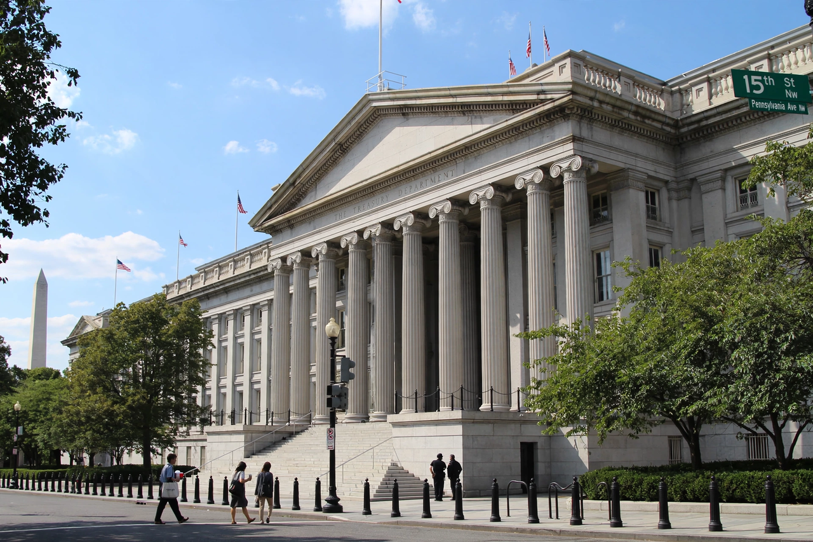

Wikipedia > Secondary sanctions
Secondary sanctions

Secondary sanctions are economic restrictions imposed by a sanctioning state not (only) on the target of its sanctions but on third parties — typically foreign companies, banks or individuals — that do business with the target. Where primary sanctions prohibit the sanctioning state's own persons from dealing with a target, secondary sanctions threaten outsiders with exclusion from the sanctioning state's market or financial system if they engage in specified transactions with the target.
Mechanism
Secondary sanctions are most prominently used by the United States, administered chiefly by the Treasury Department's Office of Foreign Assets Control (OFAC). Their leverage derives from the centrality of the US dollar in global finance: because most dollar payments clear through the United States, foreign banks risk losing access to dollar clearing — and thereby to much of world trade — if designated. Sanctioned third parties may be added to the Specially Designated Nationals (SDN) list, cutting them off from the US financial system.
Major examples
Statutes associated with secondary sanctions include the Iran sanctions legislation of the 1990s–2010s, the Countering America's Adversaries Through Sanctions Act (CAATSA, 2017), and measures directed at Russia following its full-scale invasion of Ukraine in 2022, including an executive order authorising sanctions on foreign financial institutions dealing with Russia's military-industrial base. The Cuban embargo's Helms–Burton Act (1996) also contains secondary elements, allowing suits in US courts over "trafficking" in confiscated property.
Criticism and responses
Partner governments have frequently characterised secondary sanctions as an extraterritorial application of domestic law inconsistent with international law; supporters in the sanctioning state describe them as a lawful exercise of market access on policy grounds. The European Union maintains a "blocking statute" intended to shield EU operators from certain US measures, updated in 2018 after the US withdrawal from the Iran nuclear agreement. Disputes over effectiveness are also common: analysts debate whether secondary sanctions change target behaviour or mainly accelerate efforts to build payment systems outside the dollar.
See also: Economic sanctions · Office of Foreign Assets Control · International Emergency Economic Powers Act